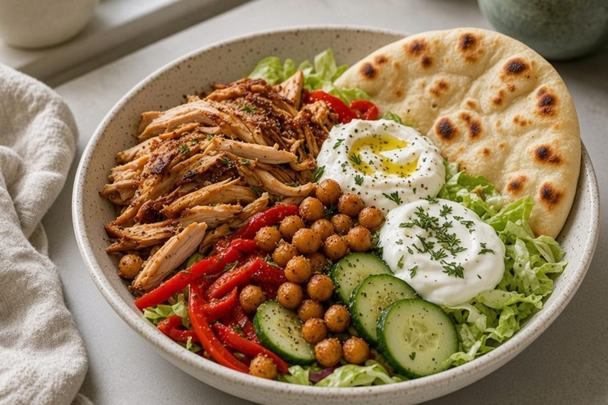

Larder
This week's dinners
Week of Monday 23 November. Shop arriving Friday 20 November, 16:00–20:00.
Cook dates start from the delivery, never from a day that has already passed.
Meal counter
9dinners2 leftovers, 5 cooked, 2 from the freezer
1freezer bufferThe spare shepherd's pie, plus chicken stock.
2026-11-27next shop byFor Sunday 29 prep. Book the slot by Tue 24, with Joe's yes.
The week
Use the arrows to move a dinner. Shorter-dated meat should come first. Then say how it went. It saves on this phone.
Fri 20
Already in · Leftovers, not shopped again
Fridge leftovers: lemon chicken traybake
Delivery 16:00–20:00. Salmon straight into the freezer.
Sat 21
Already in · Leftovers, not shopped again
Fridge leftovers: filled pasta
Read the meat labels before Sunday's order of work.

Corn-fed roast chicken, Maris Piper roasties, carrots and tenderstem
Open the card
Prep day. Meatballs and pork stew base go into the freezer.
Sunday prepJude's plateLeaves leftovers
Jude: Set Jude's plain chicken and mash aside before any salted butter or pepper.
Mon 23
Football night · From the freezer

Freezer shepherd's pie
Football night: reheat only. Out of the freezer on Sunday night.

Chicken shawarma bowls with flatbreads and houmous
Open the card
Uses Sunday's chicken. Keep it within 2 days of the roast. The chicken is not bought again.
QuickJude's plate
Uses leftovers from R12. The main pack is not bought again.
Jude: Take Jude's chicken and a few chickpeas out before any spice. Leave out the houmous and the Peppadews.

Harissa salmon with crushed potatoes
Open the card
Defrost on Tuesday night. Can swap with Thursday or Friday.
QuickJude's plate3 for £10
Jude: Cut Jude's piece of salmon and bake it plain, before the harissa.

Lamb and carrot meatballs in tomato sauce with tagliatelle
Open the card
Shortest-dated meat. Frozen on Sunday, so it can move. Defrost the night before.
QuickSunday prepJude's plate3 for £10
Jude: Lift Jude's meatballs and a spoon of sauce out before you season.

Gochujang pork shoulder stew with hand-ripped noodles
Open the card
Frozen on Sunday, so it can move. Defrost the night before.
QuickSunday prepJude's plate3 for £10Uses the veg box
Jude: Take Jude's plain pork, carrot and broth out before the gochujang.
Sat 28
From the freezer · From the freezer

Freezer lasagne
The spare shepherd's pie stays frozen as the buffer.
Sunday prep
-
On arrival. Salmon straight into the freezer. Check the use-by dates on the lamb, pork and chicken.
-
Sun 12:30. Lamb meatballs. Shortest-dated mince. Mix, roll, bake, cool and freeze.
Jude: Lift Jude's meatballs and a spoon of sauce out before you season.
-
Sun 13:00. Pork stew base. Brown, simmer, then freeze both pots.
Jude: Take Jude's plain pork, carrot and broth out before the gochujang.
-
Sun 15:30. Roast chicken, then potatoes and carrots. Dinner about 17:15.
Jude: Set Jude's plain chicken and mash aside before any salted butter or pepper.
-
Sun after dinner. Strip the chicken for Tuesday. Unsalted stock from the carcass. Freeze 500 ml for Friday.
Jude: Set Jude's plain chicken and mash aside before any salted butter or pepper.
-
Sun bedtime. Shepherd's pie from the freezer to the fridge for Monday football.
Jude's plate
- No added salt, sugar or honey. Take his portion out before any salt, paste or sauce.
- He loves mash, so chicken goes in finely chopped through mash. Salted butter stays on the adult side.
- Check every bone in the salmon. Make the meatballs and noodles soft and small.
Something missing?